Overview
In this project we implemented de casteljau's algorithm to draw smooth bezier surfaces. However, bezier surfaces are difficult to render due to how computationally expensive it is to render them. Thus, we also implemented triangle meshes with phong shading and loop subdivision to make them appear smoother.
Section I: Bezier Curves and Surfaces
Part 1: Bezier Curves with 1D de Casteljau Subdivision
Briefly explain de Casteljau's algorithm and how you implemented it in order to evaluate Bezier curves. Due to how difficult it is to render bezier surfaces, we turned towards triangle meshes to represent surfaces. To smooth triangle mesh surfaces out, we implemented a shading technique through weighted vertex normalization and implemented loop subdivision for the mesh.
de Casteljau's algorithm is a recursive algorithm used to compute the point on a Bezier curve given a ratio. This ratio parameter determines the location that we subdivide each line segment formed from a set of control points.
As a brief summary of our implementation, we recursively subdivided each line segment formed from control points dervied from the previous iteration of the algorithm. The point of subdivision on a line segment is determined by the ratio parameter and that point will be part of the set of new control points for the next iteration of the algorithm. The number of new control points calculated from dividing the line segments will always be 1 less than the number of control points used to form those line segments. Thus, the algorithm will terminate when only 1 control point is calculated. This last control point is a point on the bezier curve.
Take a look at the provided .bzc files and create your own Bezier curve with 6 control points of your choosing. Use this Bezier curve for your screenshots below.
The following images are visualizations of the control points created at each iteration of de Cateljau's algorithm.
The white dots are the initial control points. Blue/Red dots are control points calculated by the algorithm. The red dot is the point on the bezier curve.
|
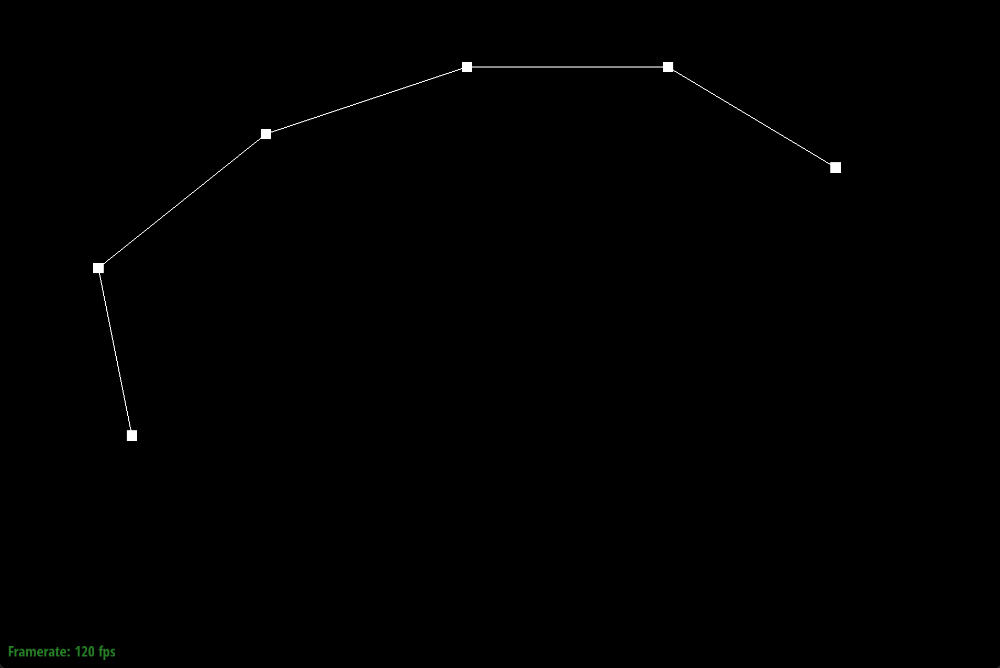
Level 0, Initial 6 Control Points |
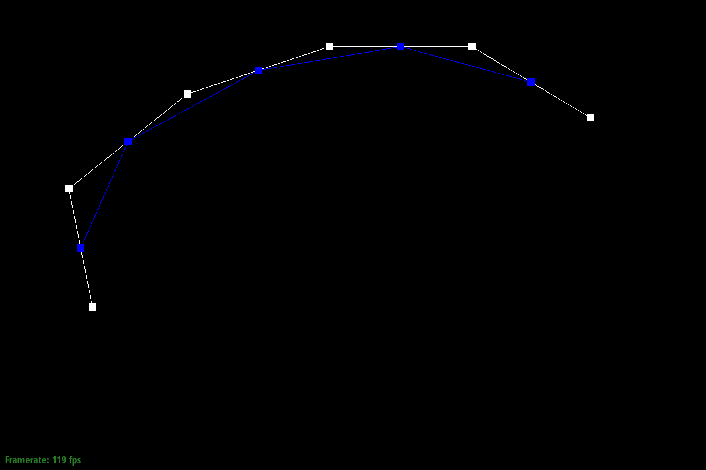
Level 1, 5 Control Points |
|
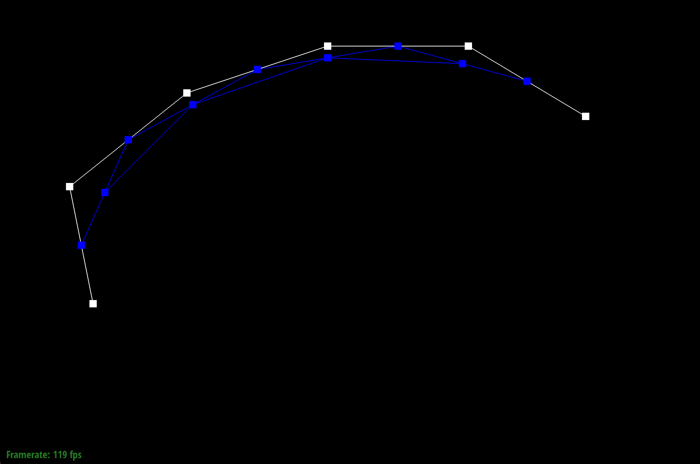
Level 2, 4 Control Points |
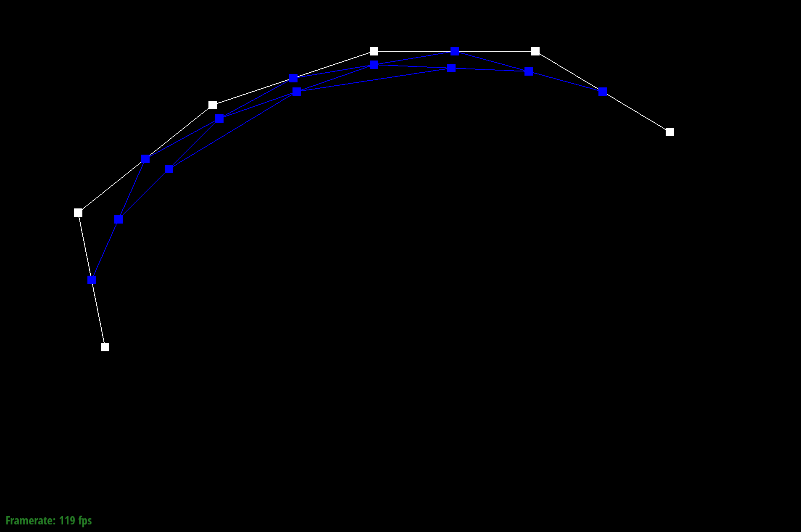
Level 3, 3 Control Points |
|
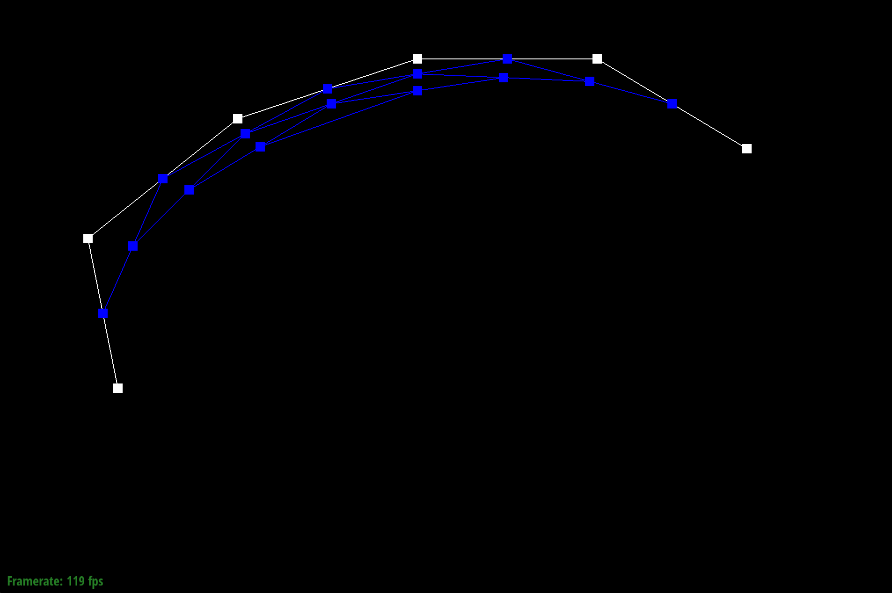
Level 4, 2 Control Points |
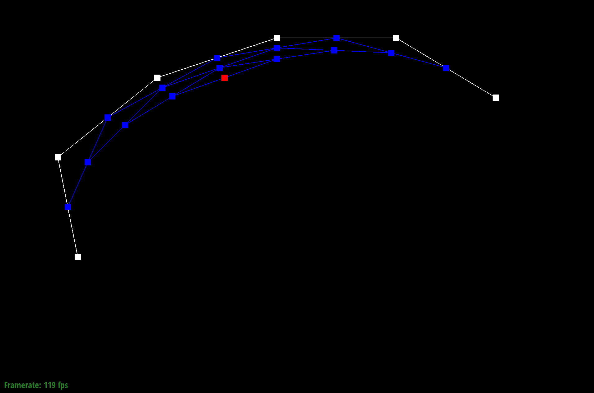
Level 5, 1 Control Point |

Show a screenshot of a slightly different Bezier curve by moving the original control points around and modifying the parameter \(t\) via mouse scrolling.
Level 5, control points moved and t adjusted to be close to 1 or 0.
Part 2: Bezier Surfaces with Separable 1D de Casteljau
Briefly explain how de Casteljau algorithm extends to Bezier surfaces and how you implemented it in order to evaluate Bezier surfaces.
de Casteljau's algorithm extends to Bezier surfaces by treating points on multiple different bezier curves as the control points for a final bezier curve. This final bezier curve allows us to generate 3-dimensional bezier patches because a new axis can be represented by this final bezier curve. This calcualtion is best formulated in a matrix, where each row represents a distinct bezier curve and columns represent the control points for the bezier curve. Thus, the number of control points of the final bezier curve is equal to the number of rows (# of bezier curves).
As a brief summary of our bezier patch algorithm, we used de casteljau's to calculate a point from each bezier curve in the matrix then used those points as the control points for our final bezier curve. All bezier curves represented by the matrix use the same ratio parameter and the final bezier curve uses a different ratio parameter.
Show a screenshot of bez/teapot.bez (not .dae) evaluated by your implementation.
Teapot generated with bezier surfaces.
Section II: Triangle Meshes and Half-Edge Data Structure
Part 3: Area-Weighted Vertex Normals
Briefly explain how you implemented the area-weighted vertex normals.
We found the area weighted normal of a vertex by normalizing the sum of the weighted normals of incident faces to that vertex. Each normal in the sum are weighted by the areas of the face that they are normal to.
The algorithm to calculate the area weighted normal of a vertex is as follows:
1. Iterate through all faces incident to the target vertex. This is done by using a while loop and a series of halfedge() and twin() method calls to traverse all incident faces. Each iteration will calculate the weighted area normal of a single face.
2. At each iteration, we calculated the area weighted normal of a face by multiplying the normalized normal of the face by its area. We found the normal of a face by taking the cross product of two vectors on the triangle. We then added the area weighted normal to a variable keeping track of a running sum. Additionally, we kept track of the running sum of areas through another variable.
3. After the loop ends, we divide the sum of area weighted normals by the total area and return this as a unit vector.
Show screenshots of dae/teapot.dae (not .bez) comparing teapot shading with and without vertex normals. Use Q to toggle default flat shading and Phong shading.
|
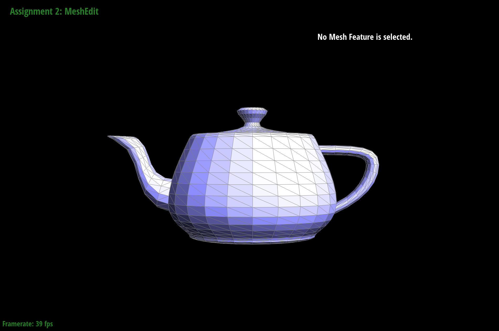
Default Flat Shading |
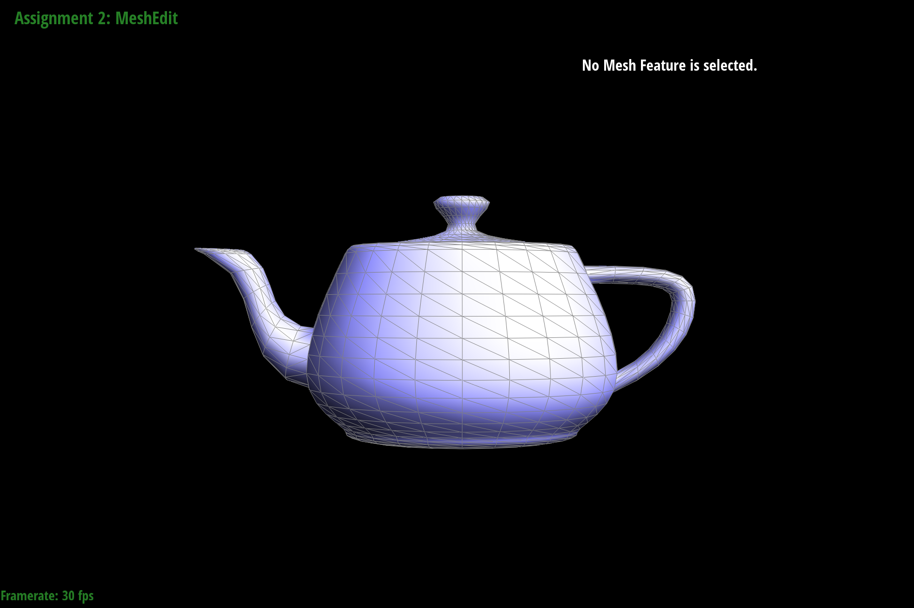
Phong Shading |
Part 4: Edge Flip
Briefly explain how you implemented the edge flip operation and describe any interesting implementation / debugging tricks you have used.
We implemented edge flip by first defining all variables that would be changed in the edge flip operation. This includes vertices, halfedges, edges, and faces. We saved all these pointers in variables before modifying them to make it clearer for which pointers we will be reassigning during the edge flip operation. Additionally, to make avoid missing anything, we brute-forced the alorithm by just assigning all pointers to what it should be after the edge flip operation even if it is already the correct assignment.
Show screenshots of the teapot before and after some edge flips.
|
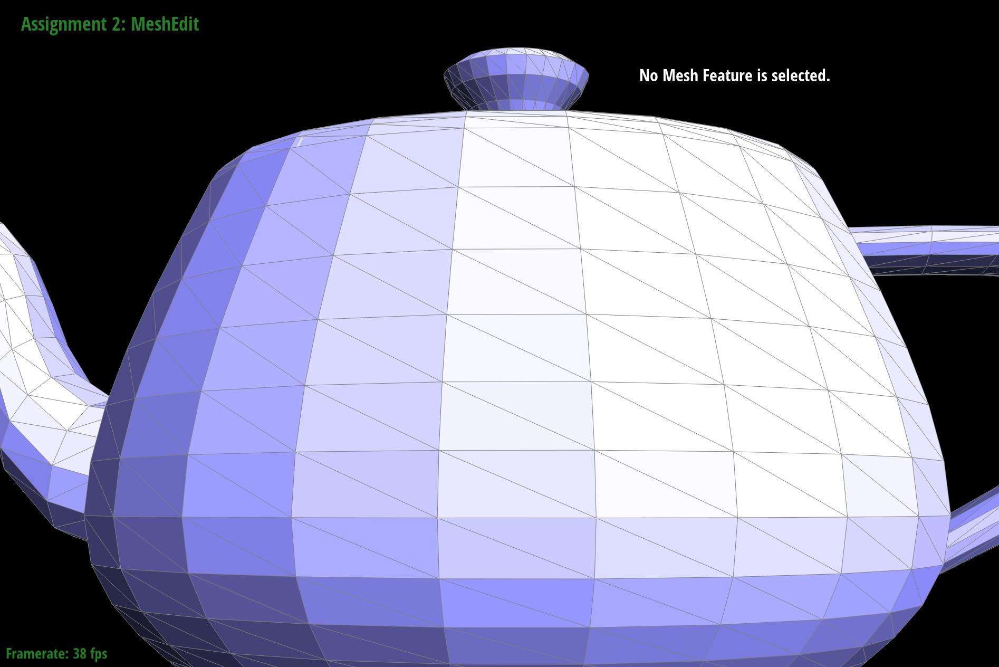
Original Teapot |
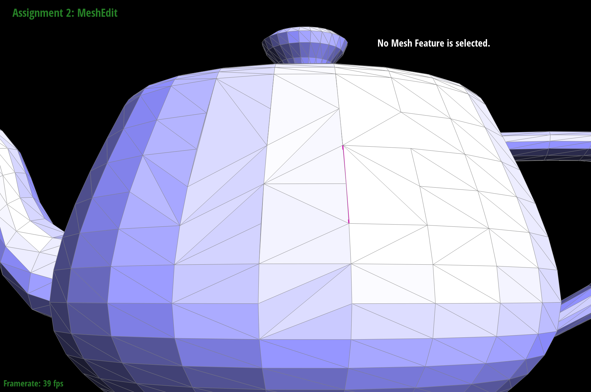
After flipping some edges |
Write about your eventful debugging journey, if you have experienced one.
At first, we tried only changing the vertices, edges, faces, and halfedges that we thought needed to be changed which caused bugs that were really difficult to catch. So, we decided to "brute-force" the solution by reassigning every pointer, even if it was redundant which guaranteed that our solution worked.
Part 5: Edge Split
Briefly explain how you implemented the edge split operation and describe any interesting implementation / debugging tricks you have used.We solved this problem in a similar fashion to the way that we solved part 4. We first set every pointer into a variable and created all the new edges, vertices, and halfedges that would be created after a split operation. After that, we just "brute-force" reassigned every pointer to what it should be (even if redundant), using a picture as reference.
Show screenshots of a mesh before and after some edge splits.
|
Original Teapot |
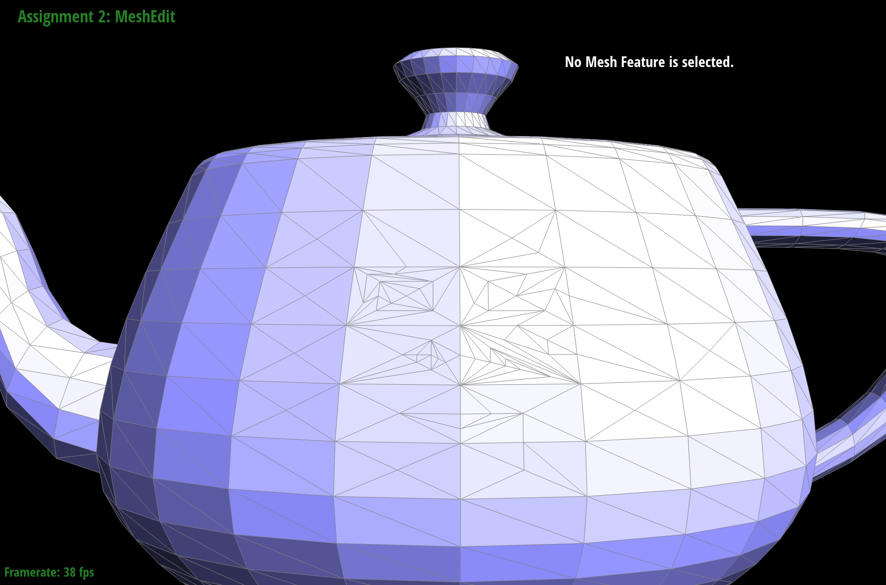
After some spltting some edges |
Show screenshots of a mesh before and after a combination of both edge splits and edge flips.
|
Original Teapot |
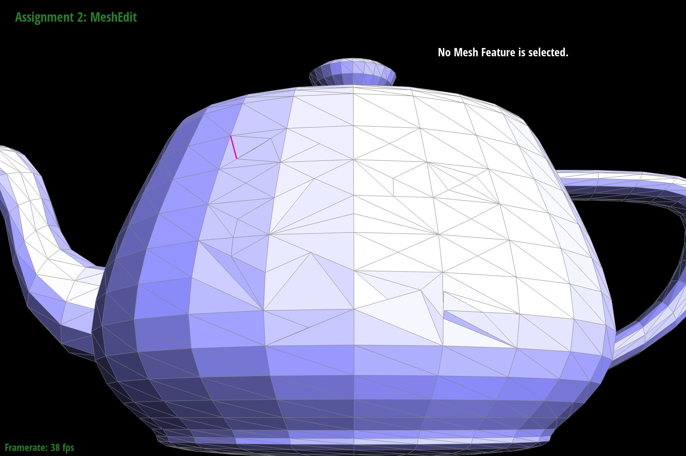
After flipping and splitting some edges |
Write about your eventful debugging journey, if you have experienced one.
Thanks to our strategy from part 4, we thankfully did not run into any bugs on this part.
If you have implemented support for boundary edges, show screenshots of your implementation properly handling split operations on boundary edges.
We did not implement support for boundary edges.
Part 6: Loop Subdivision for Mesh Upsampling
Briefly explain how you implemented the loop subdivision and describe any interesting implementation / debugging tricks you have used.
We implemented loop subdivision by:
1. Calculating the position of old verticies after subdivision and saved it into their newPosition variable. This variable will come in handy after loop subdivision to reassign the location of vertices to their new position. We calculated the new position of old verticies by simply looping over all vertices in the mesh.
2. Calculating the position of all new verticies and saving it to the edges' newPosition variable by iterating over each edge in the mesh.
3. Calling edge split on every existing edge in the mesh. It is important that only edges connected to two old verticies will be split to avoid an infinte loop. Additionally, we modified our edge split algorithm to mark any new vertices as new and any new edges as new to avoid infinite edge splits. After calling edge split, we set the newPosition of the returned vertex to the new position of that we calculated in step 2.
4. Flipping all new edges that connect a new and old edge by looping over all edges in the mesh after step 3. We then unmark the edge so it is no longer considered new.
5. We iterate over all vertices and update their position to their new positions.
Take some notes, as well as some screenshots, of your observations on how meshes behave after loop subdivision. What happens to sharp corners and edges? Can you reduce this effect by pre-splitting some edges?
Meshes get smoother after loop subdivision due to increasing the number of triangles. Sharp corners and edges get smoother after performing loop subdivision. Yes, after presplitting edges, it is possible for the object to get sharper as a result of pre-split edges.
|
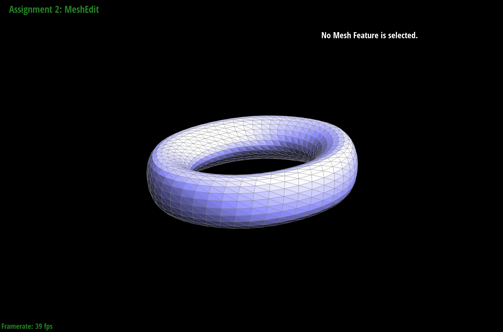
Original torus after subdividing 3 times. |
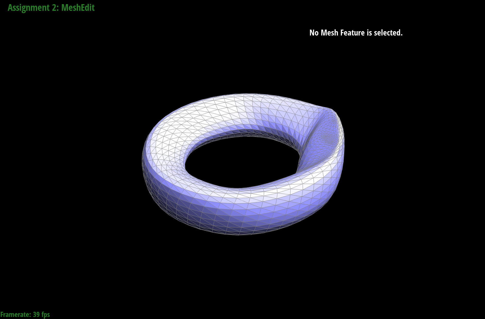
Torus with pre-split triangles and after subdividing 3 times. Many pre-split edges are concentrated on the right side of the torus. |
Load dae/cube.dae. Perform several iterations of loop subdivision on the cube. Notice that the cube becomes slightly asymmetric after repeated subdivisions. Can you pre-process the cube with edge flips and splits so that the cube subdivides symmetrically? Document these effects and explain why they occur. Also explain how your pre-processing helps alleviate the effects.
Without pre-splitting/flipping, some corners of the cube look like this
Inuitively, because the faces in the corner vertex's surrounding mesh are not symmetric, the new position of the old corner vertex gets pulled off center because there are more vertices towards the top right of the surrounding mesh that are also further than those in the bottom left. Thus, the final position of the corner gets pulled towards the top right. Furthermore, each vertex of the cube does not have the same number of incident faces, thus upsampling all triangles will produce asymmetries.
| 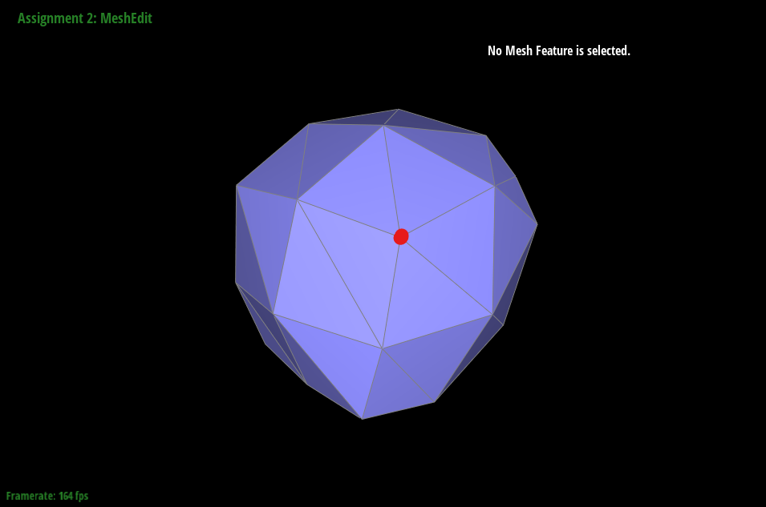 | |
| 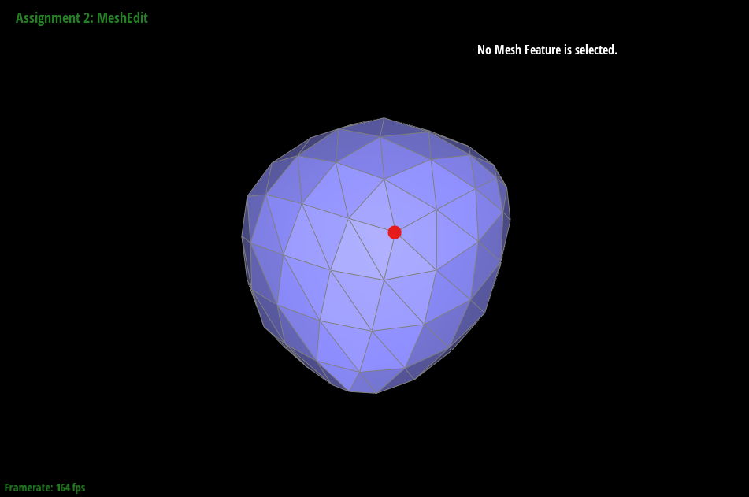 | 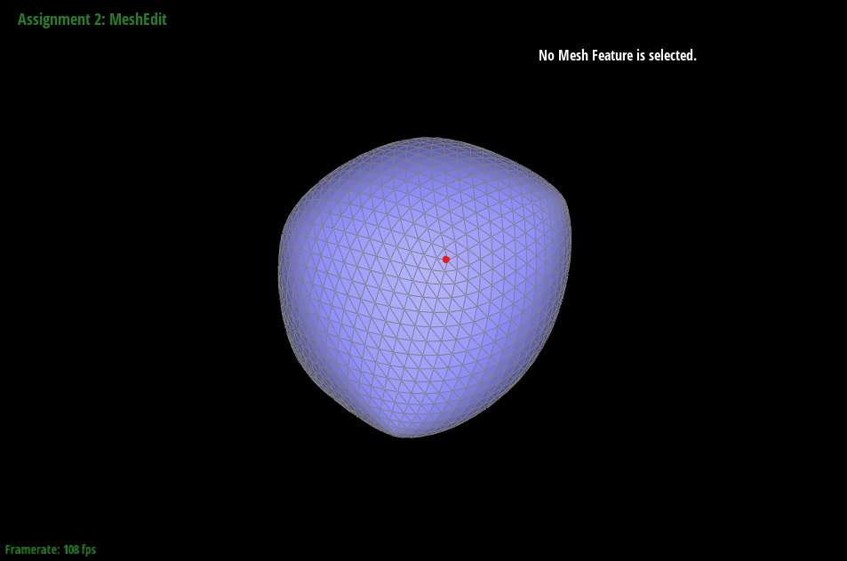 |
We flipped the edges on some of the faces of the cube so that they point towards a common vertex in a triangle (see below). Now, due to this symmetry around these vertices, when calculating the new position of the vertices, the original corner stays in the same place because all the vertices in corner's surrounding mesh are symmetric and the same distance from the corner. This now holds for every corner, so the shape stays symmetrical much like the original cube.
|
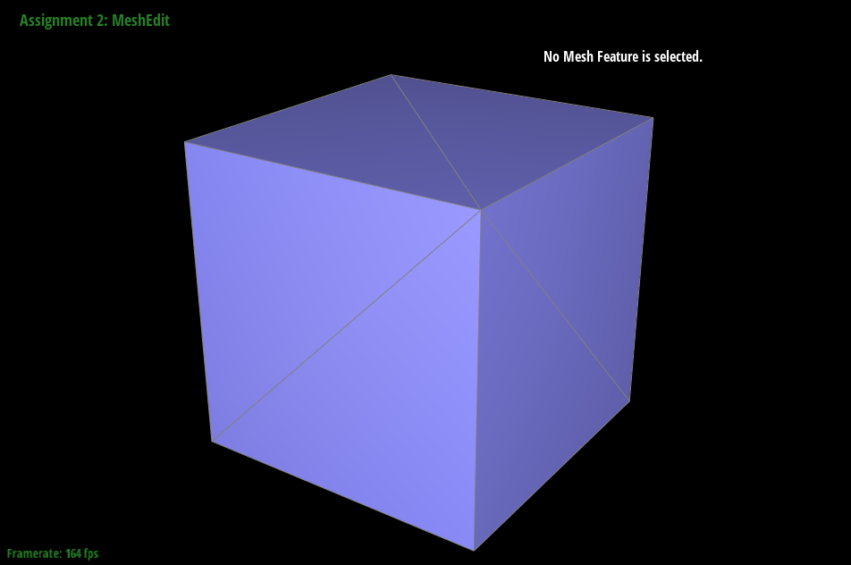
Flipped edges so that they are symmetric on each side of the cube. |
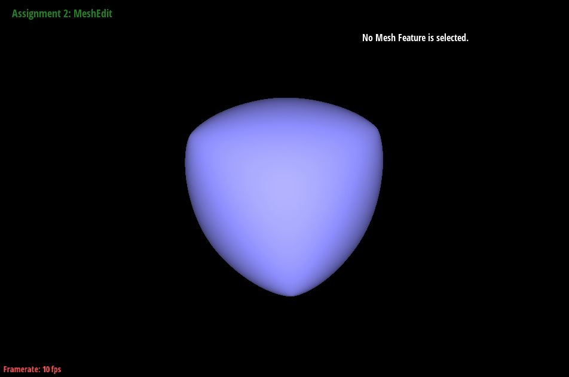
The cube is now symmetrical when upscaled |
If you have implemented any extra credit extensions, explain what you did and document how they work with screenshots.
YOUR RESPONSE GOES HERE
Part 7 (Optional, Possible Extra Credit)
Save your best polygon mesh as partsevenmodel.dae in your docs folder and show us a screenshot of the mesh in your write-up.YOUR RESPONSE GOES HERE
Include a series of screenshots showing your original mesh and your mesh after one and two rounds of subdivision. If you have used custom shaders, include screenshots of your mesh with those shaders applied as well.
YOUR RESPONSE GOES HERE
Describe what you have done to enhance your mesh beyond the simple humanoid mesh described in the tutorial.
YOUR RESPONSE GOES HERE